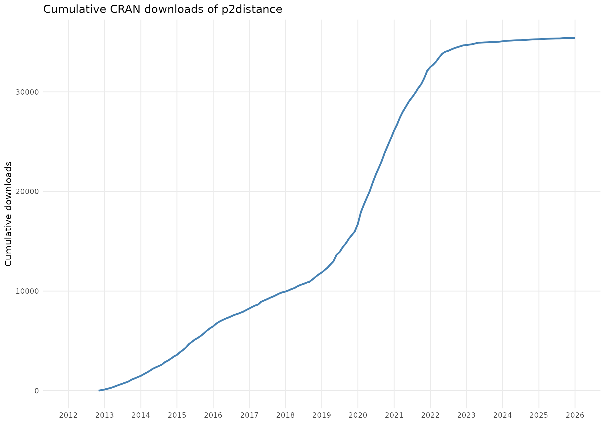

Downloads
Since being restored to CRAN, p2distance downloads are
tracked via the cranlogs package. The plot below shows
cumulative downloads over time

Citing works
The following peer-reviewed studies have used p2distance
to compute synthetic well-being, competitiveness, or sustainability
indicators, listed in chronological order.
Is your work missing from this list? Open an issue or send a pull request adding it.
Bonet-García, F. J., Pérez-Luque, A. J., Moreno-Llorca, R. A.,
Pérez-Pérez, R., Puerta-Piñero, C., & Zamora, R. (2015). Protected
areas as elicitors of human well-being in a developed region: A new
synthetic (socioeconomic) approach. Biological Conservation,
187, 221–229. https://doi.org/https://doi.org/10.1016/j.biocon.2015.04.027
Carradore, M. (2025). Social capital in the italian regions at the time
of the COVID-19 pandemic: A comparison of different composite
indicators. International Review of Sociology, 35(1),
89–106. https://doi.org/10.1080/03906701.2024.2448945
Ciacci, A., Ivaldi, E., & González-Relaño, R. (2021). A partially
non-compensatory method to measure the smart and sustainable level of
italian municipalities. Sustainability, 13(1), 435. https://doi.org/10.3390/su13010435
Merino Llorente, M. C., Somarriba Arechavala, N., & García Prieto,
C. (2023). European workers’ health and well-being: Do gender gaps
persist between 2010 and 2015? Revista de Economía
Mundial, (63), 117–137. https://doi.org/10.33776/rem.vi63.7207
Pérez-Luque, A. J., Moreno-llorca, R. A., Pérez-Pérez, R., &
Bonet-García, F. J. (2016). Temporal analysis of wellbeing in the
municipalities of Sierra Nevada. In R. Zamora, A.
Pérez-Luque, F. Bonet, J. Barea-Azcón, & R. Aspizua (Eds.),
Global change impacts in Sierra Nevada: Challenges for
conservation (pp. 186–187). Consejería de Medio Ambiente y
Ordenación del Territorio. Junta de Andalucía.
Sánchez de la Vega, J. C., Buendía Azorín, J. D., Calvo-Flores Segura,
A., & Esteban Yago, M. (2019). A new measure of regional
competitiveness. Applied Economic Analysis, 27(80),
108–126. https://doi.org/10.1108/AEA-07-2019-0010
Somarriba Arechavala, N., & Zarzosa Espina, P. (2016). Quality of
life in latin america: A proposal for a synthetic indicator. In G. Tonon
(Ed.), Indicators of quality of life in latin america (pp.
19–56). Springer International Publishing. https://doi.org/10.1007/978-3-319-28842-0_2